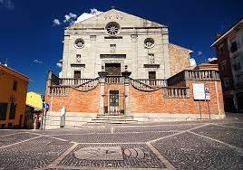
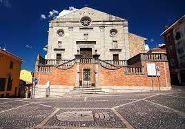

PORTAL OF
ARIANO IRPINO
PORTAL OF ARIANO IRPINO
CLICCA QUI
 

La villa comunale è un parco storico pubblico situato sul colle Castello, la più elevata (oltre 800 m s.l.m.) delle tre alture su cui sorge il centro storico di Ariano Irpino (noto anche come la città del Tricolle[1]). La caratteristica peculiare del parco è quella di svilupparsi tutt'attorno al castello normanno, una fortezza medievale che in epoca normanna divenne residenza di re Ruggero II il quale nel 1140 vi tenne le Assise di Ariano, ossia la prima Costituzione del Regno di Sicilia[2].Il castello, edificato probabilmente dai Longobardi di Benevento, rimase in uso per circa un millennio, per essere poi definitivamente abbandonato al termine delle grandi guerre d'Italia del XVI secolo[7]; tuttavia l'uso civico di pascolo sui terreni circostanti rimase integralmente in vigore anche nelle epoche successive. Fin dal 1838 è però attestato l'utilizzo di tali distese erbose anche come area di svago ("luogo di diporto"), benché l'unica presenza arborea fosse costituita da un filare di tigli (già all'epoca definiti "annosi") lungo il versante nord-orientale del maniero[8]; ne restano pochi esemplari all'interno del circuito dello stadio Silvio Renzulli, edificato nella medesima area in epoca fascista. Nel frattempo alcuni progetti alternativi (costruzione di un cimitero o di un impianto di tiro a segno) erano stati presto abbandonati, poiché la creazione di un vero e proprio giardino pubblico fu ritenuta prioritaria. A tale scopo, dopo l'unità d'Italia si diede l'avvio ai lavori di spianamento e di piantumazione finché nell'ottobre 1876 fu ufficialmente aperto al pubblico il primo lotto della villa comunale; il parco, ancora poco esteso ma riparato dai venti occidentali e con vista sui monti della Daunia, era già dotato di fontana, peschiera e tavernetta[9].